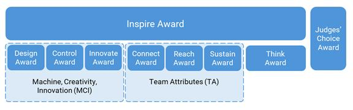
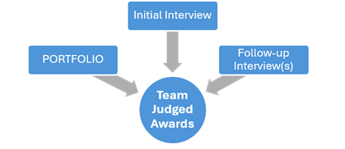
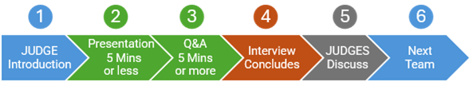
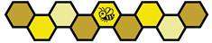

Бул бөлүмдө FIRST Tech Challenge мелдешиндеги калыстардын баалоосунун ар бир компонентинин жана ROBOT оюнуна тиешелүү сыйлыктардын жалпы сыпаттамасы берилет.
FIRST Tech Challenge талаада да, талаадан тышкары да мелдештин кызыгын даңазалайт. Төмөнкү сыйлыктар аркылуу биз бизди ушунчалык «More than Robots®» (роботтордон да көбүрөөк) кылган FIRST негизги баалуулуктарын даңазалайбыз. Иш-чаранын ар кандай түрлөрүндө (мисалы, лиганын турнирлеринде, регионалдык чемпионатта, FIRST Championship мелдешинде) же өлчөмдөрүндө ар башка сыйлыктар топтому сунушталышы мүмкүн экенин эске алыңыз. Ар бир сыйлык эле ар бир FIRST Tech Challenge иш-чарасында тапшырыла бербейт. Лиганын жолугушууларында (League Meets) сыйлыктар тапшырылбайт — 14 Лига турнирлери (L) бөлүмүн караңыз; иш-чаранын түрлөрү боюнча кошумча маалымат төмөндөгү бөлүмдөрдө берилген.
Калыстар баалаган командалык сыйлыктарды кылдат окутуудан жана сертификациядан өтүп, иш-чарага даярданган коомчулуктун ыктыярчылары аныкташат. Калыстардын баалоосунда ыктыярчылардын эки негизги ролу бар:
FIRST Tech Challenge мелдешинде калыстардын баалоосу эки жолдун бири менен өткөрүлөт. Көпчүлүк иш-чараларда стандарттуу күндүзгү оюн менен бирге калыстардын күндүзгү («салттуу») баалоосу болот. Экинчи вариант — аралаш формат: оюн күндүзгү түрдө өтөт, бирок калыстардын баалоосунун бир бөлүгү же бардыгы бардык командалар үчүн күндүзгү оюнга чейин аралыктан өткөрүлөт. Бул колдонмодо негизинен калыстардын салттуу күндүзгү баалоо процесси сүрөттөлөт. Аралыктан баалоо процесси калыстардын баалоосунун ошол эле жалпы стандарттарына жана талаптарына баш ийет, бирок маектердин бир бөлүгү же бардыгы онлайн өткөрүлөт, жана жүзмө-жүз жолугушуулар болбошу мүмкүн.
Командалар калыстардын баалоосунун толук процесси жөнүндө тереңирээк түшүнүк алуу үчүн калыстар үчүн колдонмону (Judge Manual) жана калыстардын кеңешчиси үчүн колдонмону (Judge Advisor Manual) окуп чыкса болот. Ошондой эле бардык командалар FIRST-ти өнүктүрүү үчүн жасап жаткан сонун иштери тууралуу JUDGES-ке жана коомчулугубузга так жеткире алышы үчүн коомчулук менен иштөө боюнча терминдер жана аныктамалар документин (Outreach Terms and Definitions) карап чыгуу сунушталат.
FIRST Tech Challenge мелдешинде калыстар баалаган командалык сыйлыктар ар биринде бир же бир нече сыйлыгы бар үч категорияга бөлүнөт: Машина, чыгармачылык жана инновация (Machine, Creativity, and Innovation, MCI), Команданын сапаттары (Team Attributes, TA) жана Документация. Мындан тышкары, Judges’ Choice Award (Калыстардын тандоосу сыйлыгы) башка категориялардын биринде да таанылбаган, өзгөчөлөнгөн командага берилет. Эң абройлуу, ар тараптуу сыйлык — Inspire Award (Шыктандыруу сыйлыгы) (Сүрөт 6‑1).
Жергиликтүү Program Delivery Partner жергиликтүү демөөрчүлөрдү же демилгелерди даңазалоо үчүн кошумча сыйлыктарды берүүнү чечиши мүмкүн, бирок бул сыйлыктар 4 Кийинки баскычка өтүү бөлүмүндө сүрөттөлгөн өтүү упайларын эсептөө максатында калыстар баалаган командалык сыйлыктар деп эсептелбейт.
Сүрөт 6‑1: Сыйлыктардын иерархиясы

JUDGES командалардан маалыматты бир нече ар кандай жолдор аркылуу чогултушат (Сүрөт 6‑2). Бардык командалар калыстар баалаган командалык сыйлыктардын критерийлерин түздөн-түз колдогон команда тууралуу маалыматты же JUDGES эске алышын каалаган маалыматты документтештирген команданын PORTFOLIO тапшыруу мүмкүнчүлүгүнө ээ болушат.
JUDGES тандаган бардык сыйлык ээлери сыйлык критерийлеринин оң үлгүсү катары таанылат, сөзсүз эле «эң мыкты» команда катары эмес. JUDGES 6.3 Калыстар баалаган командалык сыйлыктардын сыпаттамасы бөлүмүндө жарыяланган сыйлык критерийлерин гана эске алышат.
Командалар ROBOT-тун техникалык текшерүүдөн өткөн-өтпөгөнүнө карабастан калыстардын баалоосуна катыша алышат жана иш-чарага ROBOT-сыз келсе да сыйлыкка талапкер боло алышат.
JUDGES ар бир сыйлыкты кароодо маалымат булагы катары алгачкы маекти, ар кандай кошумча маекти жана PORTFOLIO (колдонулса) пайдаланышат.
Сүрөт 6‑2: Калыстар баалаган командалык сыйлыктар үчүн маалымат булактары.

JUDGES командаларды баалоо үчүн колдонгон конкреттүү маалымат булактарынан тышкары, атайын тыюу салынган маалымат булактары да бар. JUDGES учурдагы иш-чарадагы жана учурдагы сезондогу маалыматты гана эске алууга катуу көрсөтмө алышат.
Калыстардын баалоосу максатында учурдагы сезон 2026-жылдын 1-январында башталат. JUDGES учурдагы иш-чарада көргөн же уккан нерселеринен тышкаркы маалыматты эске ала алышпайт.
A201.E эрежесине ылайык, 2026-жылдын 1-январынан бери болгон прогресс, кыйынчылыктар жана жетишкендиктер команданын PORTFOLIO-сунда документтештирилиши мүмкүн жана учурдагы сезондун бир бөлүгү катары эске алынат.
Калыстардын баалоо процессинде эске алынбай турган маалыматтын мисалдары (бирок алар менен эле чектелбейт):
Сыйлыктар — FIRST STUDENTS-ти шыктандыруу жана алардын көзүн биргеликте жакшыраак келечек курууга ачуу үчүн колдонгон ыкма. Калыстардын баалоо процесси STUDENTS менен JUDGES ортосунда оң мамилени калыптандырганы оң; JUDGES — алардын жетишкендиктерин тааный ала турган жана аларды окууну улантууга үндөй турган көз карандысыз, камкор чоңдор.
Бардык командаларга алгачкы маекке даярдануу сунушталат: анда команда JUDGES-тин чакан тобуна алдын ала даярдалган оозеки презентация жасап, андан кийин ачык суроо-жооп сессиясы өтөт.
Алгачкы маек үч форматтын биринде өткөрүлүшү мүмкүн:
Алгачкы маектин үч түрүнүн тең эрежелери бирдей жана алар командаларга JUDGES менен маалымат бөлүшүүгө мүмкүндүк берет.
Сүрөт 6‑3: Алгачкы маектин убакыт тартиби

1. JUDGES командага өздөрүн тааныштырып, команданын баштагысы келген даяр презентациясы бар-жогун сурашат.
2. A205 эрежесине ылайык командалар JUDGES-ке болжол менен 5 мүнөткө чейин үзгүлтүксүз презентация жасаса болот.
3. Маектин калган убактысында JUDGES ачык суроолорду берип, команда менен баарлашышат.
4. Маекти JUDGES аякташат.
5. JUDGES маектин чоо-жайын өз ара жабык талкуулап, кайтарым байланыш формасын толтурушат.
6. JUDGES маек өтө турган кийинки команданы аныктап, процессти кайталашат.
Иш-чаранын директору JUDGE Advisor жана регионалдык пландоо комитети менен макулдашып, алгачкы маектин форматын аныктоого жана бул маалыматты иш-чарага чейин командаларга жеткирүүгө жооптуу. Тандалган вариантка карабастан, бардык командалар өз иш-чарасында бирдей формат менен маектен өтөт деп күтүлөт.
Алгачкы маек пит-зоналарда өткөрүлгөн иш-чараларга катышкан командалар пит-аймак жандуу жана көбүнчө ызы-чуулуу чөйрө экенин эске алганы оң. JUDGES командаларга маалымат берүүгө жана суроолорго жооп берүүгө үзгүлтүксүз мүмкүнчүлүк беришет, бирок маек учурунда тышкы алаксытуучу нерселер (мисалы, пит-зоналардагы кулактандыруулар жана жалпы фондук ызы-чуу) болушу мүмкүн жана бул байланышта кыйынчылыктарды жаратышы мүмкүн.
Пит-зоналарда өткөн маектер үчүн JUDGES командалар MATCHES-ке катыша алышы жана ROBOTS менен иштей алышы үчүн MATCH кезегин башкаруучулар жана техникалык ыктыярчылар менен биргеликте иштешет.
Командаларга калыстар менен маекке чейин JUDGES бериши мүмкүн болгон суроолордун түрүн түшүнүү үчүн калыстардын маек суроолорунун банкын (Judge Interview Question Bank) карап чыгуу сунушталат. Ар бир иш-чарада JUDGE Advisor суроолор банкынан эки суроону тандайт, алар алгачкы маектин суроо-жооп сессиясынын башында бардык командаларга берилет. Бир суроо MCI сыйлык категориясына, бир суроо TA сыйлык категориясына багытталат. Алгачкы эки суроо берилип, аларга жооп алынгандан кийин JUDGES команданын натыйжаларын сыйлык критерийлерине карата баалоого жардам берүү үчүн кошумча суроолорду бериши мүмкүн.
Маек учурунда берилген кошумча суроолор суроолор банкынан болушу мүмкүн, бирок командалар документте көрсөтүлбөгөн суроолорго да жооп берүүгө даяр болгону оң.
Калыстардын бардык топтору алгачкы маектерди аяктагандан кийин JUDGES жазууларын салыштырып, мелдеш учурунда пит-аймакта командалар менен кошумча сүйлөшүүнү жана расмий эмес пит-маектерди өткөрүүнү чечиши мүмкүн. Пит-маектердин бул айлампасында командалар алгачкы маекте көрсөтүлгөн материалдарды кеңейтип, JUDGES менен кошумча материалдарды бөлүшө алышат (мисалы, ROBOT прототиптери, долбоорлоо артефакттары жана коомчулук менен иштөө иш-чараларынан сүрөттөр же каттар). Командага бул пит-маек үчүн башка презентация даярдоонун кереги жок, бирок JUDGES-тин суроолоруна жооп берүүгө даяр болгону оң.
JUDGES пит-маектер учурунда кошумча маалыматты окушу мүмкүн, бирок JUDGE талкууларында колдонуу үчүн кошумча материалдарды өздөрү менен алып кетишпейт.
Жалпысынан, JUDGES коомчулук менен үзгүлтүксүз, туруктуу иштөөнү анда-санда же бир жолку иштөөгө караганда сапаттуураак деп эсептешет. JUDGES коомчулук менен иштөөнүн ал иш-чара камтыган адамдарга кандай таасир тийгизгенин түшүнүүгө аракет кылышат.
Командаларга конкреттүү терминдердин (FIRST командасын түзүү, иш-чара өткөрүү, x сандагы адамды камтуу) артындагы талаптарды түшүнүү үчүн коомчулук менен иштөө боюнча терминдер жана аныктамалар документин карап чыгуу сунушталат. Бул документте саналган конкреттүү термин команданын PORTFOLIO-сунда же маек учурунда айтылганда JUDGES конкреттүү суроолорду бериши мүмкүн.
A201 *Команданын PORTFOLIOS чектелген. Командалар калыстардын баалоо процессинде колдонуу үчүн команданын PORTFOLIO тапшыруу мүмкүнчүлүгүнө ээ. Бул документтен тышкаркы башка басылма же санариптик материалдарды JUDGES талкуу учурунда кароо үчүн кабыл алышпайт. Команданын PORTFOLIOS төмөнкү талаптарга жооп берүүгө тийиш:
A. команданын номери жазылган 1 мукаба барагынан турууга тийиш; ага каалоо боюнча команданын аталышы, PORTFOLIO мазмуну, команданын уюмдары, демөөрчүлөрү, логотиби, урааны жана ROBOT-тун жана/же команданын сүрөтү кошулушу мүмкүн,
B. мазмуну 15 барактан ашпоого тийиш,
C. US Letter (8.5” x 11”) же A4 (210 x 297 мм) өлчөмүндөгү барактарды гана колдонуу,
D. санариптик түрдө тапшырылса, тапшырылган материалдын жалпы көлөмү 15MB аз болууга тийиш, жана
E. 2026-жылдын 1-январынан бери болгон прогрессти, кыйынчылыктарды жана жетишкендиктерди гана камтууга тийиш.
Мукаба барагынын мазмунунун эч бири JUDGES тарабынан сыйлык критерийлерин баалоо үчүн колдонулбайт. Уруксат берилген 15 барактан ашкан мазмунду JUDGES карабайт.
Командалар PORTFOLIO-до инсанды аныктоочу маалыматты (Personally Identifying Information, PII) катуу минималдаштырууга тийиш. Окуучулардын купуялуулугу үчүн аттарын жана фамилиясынын баш тамгасын гана колдонгула. Окуучулардын сүрөттөрүнө уруксат берилет, бирок толук аты-жөнү ачыкталбоого тийиш.
JUDGES мукаба барагын PORTFOLIO кайсы командага таандык экенин аныктоо үчүн колдонушат. Мукаба барагын кошууну унутуп калган командалар, эгер JUDGES PORTFOLIO кайсы командага таандык экенин аныктай албаса, калыстардын баалоосунан четтетилиши мүмкүн.
PORTFOLIO-ну окууга ыңгайлуу кылып түзгүлө. 10 pt кичине шрифттерден жана сүрөттөрдүн үстүндөгү контрасты төмөн тексттен качкыла — JUDGES окуй албаган нерсени баалай алышпайт. Шрифттин өлчөмү, түсү жана дизайн тандоолоруңуз түшүнүктүү экенин текшерүү үчүн WebAIM Contrast Checker сыяктуу акысыз куралдарды колдонгула.
JUDGES PORTFOLIO-догу шилтемелерди, сайттарды же видеолорду ачышпайт. Алар ошондой эле маектен кошумча басылма барактарды калыстардын бөлмөсүнө алып кете алышпайт. Командалар JUDGES көрүшүн каалаган нерселердин баарын түздөн-түз PORTFOLIO-го киргизгени оң.
Командалар PORTFOLIOS түзүү үчүн AI жана изилдөө куралдарын колдонсо болот, эгер интеллектуалдык менчик укуктарын урматтап, шилтеме же акыркы эскертме түрүндө булакты көрсөтүшсө. Булакты көрсөтүүнүн мисалы: «Portfolio created by Team XXXXX and ChatGPT» (Портфолиону XXXXX командасы жана ChatGPT түзгөн)
Команда өсүшүн көрсөтүү үчүн мурунку сезондорго шилтеме бериши мүмкүн (мисалы, команданын же уюштуруу планында), бирок негизги басым учурдагы сезонго жасалууга тийиш.
A202 *PORTFOLIOS өз убагында жана талап кылынгандай тапшырылууга тийиш. Эгер командалар PORTFOLIO калыстардын баалоо процессинде эске алынышын кааласа, аны иш-чаранын директорунун көрсөтмөсүнө ылайык жана белгиленген мөөнөткө чейин тапшырууга тийиш. Эгер башка көрсөтмөлөр берилбесе, командалар алгачкы маек учурунда PORTFOLIO-нун 1 басылма нускасын тапшырганы оң.
Командалар PORTFOLIOS качан жана кантип тапшырышы керектиги тууралуу көрсөтмөлөрдү иш-чаранын директору иш-чарага чейин жеткиргени оң.
Эгер жагдайлар команданын PORTFOLIO тапшыруу боюнча көрсөтмөлөрдү аткаруусуна тоскоол болсо, иш-чаранын директору JUDGE Advisor менен биргеликте бардык командалардын PORTFOLIOS кабыл алуу үчүн акылга сыярлык ыңгайлаштырууларды жасаганы оң, эгер бул калыстардын баалоо процессине ашыкча жүк түшүрбөсө.
Командаларга JUDGES менен маектерде жардам болушу үчүн пит-зонасында PORTFOLIO-нун кошумча нускасын (санариптик же басылма) даяр кармоо сунушталат.
A203 *Командалар алгачкы маекке катышууга тийиш. Калыстар баалаган каалаган сыйлыкка талапкер болуу үчүн команда алгачкы маекке катышууга тийиш.
Эгер график түзүлгөн болсо, иш-чаранын директору же жергиликтүү Program Delivery Partner командаларга дайындалган убактысын иш-чарага чейин алдын ала билдиргени оң.
Эгер графикте кайчылаш келүү болсо же команда күтүлбөгөн жагдайлардан улам алгачкы маекке белгиленген убакытты өткөрүп жиберсе, команда иш-чаранын директору же жергиликтүү Program Delivery Partner менен биргеликте мүмкүн болсо иш-чарада алгачкы маек үчүн акылга сыярлык альтернативдүү ыңгайлаштырууларды уюштурганы оң.
A204 *Алгачкы маек үчүн керектүү ресурстарды даярдагыла. Командалар алгачкы маекке төмөнкүлөр менен даярданганы оң:
A. 2 же андан көп STUDENTS бар командалар үчүн кеминде 2 STUDENT өкүл,
B. маек учурунда шилтеме берүү үчүн команданын PORTFOLIO нускасы,
C. «көрсөтүп-айтып берүү» үчүн демонстрациялык буюмдар, аларга команданын ROBOT-у кириши мүмкүн (сунушталат, бирок милдеттүү эмес),
D. A208 эрежесине ылайык 1 унчукпас байкоочу (милдеттүү эмес), жана
E. A209 эрежесине ылайык ыңгайлаштыруу муктаждыктарын канааттандыруу үчүн 1 көмөкчү адам (милдеттүү эмес, зарылчылыкка жараша).
Командаларга алгачкы маек процессине мүмкүн болушунча көп STUDENTS катыштыруу сунушталат.
Калыстардын баалоосуна катышуу же калыстар баалаган сыйлыктарга талапкер болуу үчүн командада ROBOT болушу шарт эмес.
Командалар алгачкы маек учурунда ROBOT-ту күйгүзүп, анын функцияларын көрсөтсө болот, бирок маек учурунда олуттуу кечигүүлөрдү жаратууга болбойт.
A205 *Алгачкы маекке баарына бирдей убакыт берилет . Бардык командаларга кеминде 10 мүнөттүк бирдей узактыктагы алгачкы маек пландалат .
A206 *Алгачкы маектин таймери команда баштаганда иштей баштайт. Таймер JUDGES өздөрүн тааныштыргандан кийин, команда презентациясын баштаганда же маектин Q&A бөлүгү башталганда иштей баштайт. Баштоого көп убакыт короткон командаларга JUDGES тез баштоо тууралуу эскертишет, андан кийин презентация жасап жаткан команданын даярдыгына карабастан алгачкы маектин таймери иштетилет.
A207 *Даярдалган алгачкы презентациянын убактысы бөлүнбөшү керек. Алгачкы маектин биринчи 5 мүнөтү, эгер команда кааласа, даярдалган оозеки презентацияны үзгүлтүксүз көрсөтүү үчүн командага бөлүнөт. Команда үзгүлтүксүз презентация убактысын эртерээк аяктаса болот. Калган бардык убакыт JUDGES жетектеген, STUDENTS менен суроо-жооп түрүндөгү маек болгону оң.
A208 *Бир чоң адам унчукпас байкоочу катары катыша алат. Бир чоң адам калыстардын сессиясына катышып, JUDGES менен STUDENT команда мүчөлөрүнүн ортосундагы каалаган баарлашууда катыша алат. Чоң машыктыруучу(лар) алгачкы маектен тышкары JUDGES менен STUDENT команда мүчөлөрүнүн ортосундагы каалаган баарлашууда катыша алат. Чоң байкоочу жана машыктыруучу(лар) JUDGES менен STUDENT команда мүчөлөрүнүн ортосундагы каалаган баарлашуу учурунда кийлигишүүгө же жигердүү насаат берүүгө болбойт.
Чоң унчукпас байкоочунун максаты — бейтааныш чөйрөдө жаңы адамдардын алдында презентация жасап жаткан STUDENT команда мүчөлөрүнө унчукпай ишеним берүү.
A209 *Муктаж болгон командалар үчүн котормочу жана/же жаңсоо тилинин котормочусу менен ыңгайлаштыруу камсыз кылынат. Эгер команданын эне тили JUDGES-тин тилине дал келбесе, JUDGES менен баарлашуу үчүн котормочуну колдонушу керек болгон командалар котормочуну өздөрү камсыз кылса болот. Буга жаңсоо тили же башка ыңгайлаштыруучу технологиялар да кирет. Котормочунун жардамы менен маектен өтүүнү пландаган командалар зарыл болсо, 2ден 5 мүнөткө чейинки кошумча маек убактысын суроо үчүн иш-чаранын директору менен алдын ала иштешүүгө тийиш. Котормочу чоң адам болушу мүмкүн жана A208 эрежесиндеги унчукпас байкоочуга кошумча болушу мүмкүн.
Көпчүлүк учурда котормочуну команда өзү камсыз кылышы керек болот. Эгер башка ыңгайлаштыруу керек болсо, команда варианттарды талкуулоо үчүн жергиликтүү жетекчилик менен байланышканы оң.
A210 *Алгачкы маек учурунда сүрөткө тартууга, видео же аудио жазууга болбойт. E116 эрежесиндеги чектөөлөрдөн тышкары, алгачкы маек учурунда видео же аудио жазууга же сүрөткө тартууга болбойт.
A211 *Берилүүчү сыйлыктардын саны иш-чаранын өлчөмүнө жараша өзгөрөт. Берилүүчү сыйлыктардын жалпы саны иш-чарада каттоодон өткөн командалардын санына негизделет. Бардык сыйлыктар эле ар бир мелдеште берилбейт. Иш-чаранын өлчөмүнө жараша Таблица 6‑1де көрсөтүлгөн сыйлыктар гана кийинки баскычка өтүү үчүн упай алуу укугун берет.
Таблица 6‑1: Иш-чарага катышкан бардык командалардын санына жараша берилүүчү калыстар баалаган сыйлыктардын жалпы саны
| Иш-чарага катышкан командалардын жалпы саны | |||||
|---|---|---|---|---|---|
| Сыйлык | 4-10 команда | 11-20 команда | 21-40 команда | 41-64 команда | |
| Inspire Award | 1-орун | 1-орун 2-орун | 1-орун 2-орун 3-орун | 1-орун 2-орун 3-орун | |
| Think Award | 1-орун | 1-орун | 1-орун 2-орун | 1-орун 2-орун (3-орун*) | |
| TA сыйлыктары | Connect Award (Байланыш сыйлыгы) | 1-орун (Connect, Reach же Sustain сыйлыктарынын бирөө гана берилет) | 1-орун | 1-орун (2-орун*) | 1-орун 2-орун (3-орун*) |
| Reach Award (Кеңири камтуу сыйлыгы) | 1-орун | 1-орун (2-орун*) | 1-орун 2-орун (3-орун*) | ||
| Sustain Award (Туруктуулук сыйлыгы) | 1-орун | 1-орун (2-орун*) | 1-орун 2-орун (3-орун*) | ||
| MCI сыйлыктары | Design Award (Дизайн сыйлыгы) | 1-орун (Innovate, Control же Design сыйлыктарынын бирөө гана берилет) | 1-орун | 1-орун (2-орун*) | 1-орун 2-орун (3-орун*) |
| Innovate Award (Инновация сыйлыгы) | 1-орун | 1-орун (2-орун*) | 1-орун 2-орун (3-орун*) | ||
| Control Award (Башкаруу сыйлыгы) | 1-орун | 1-орун (2-орун*) | 1-орун 2-орун (3-орун*) | ||
| Judges’ Choice Award | Милдеттүү эмес* | Милдеттүү эмес* | Милдеттүү эмес* | Милдеттүү эмес* | |
*Калыстардын каалоосу боюнча берилүүчү сыйлыктар
Бул эреженин эки дивизиондуу иш-чаралар үчүн өзгөртүлгөн версиясы үчүн 13.8 Эки дивизиондуу иш-чаралар бөлүмүн караңыз.
A212 *Калыстардын баалоосу боюнча кайтарым байланыш бардык командаларга берилет. Бардык командалар алгачкы маеги боюнча кайтарым байланыш алышат. JUDGES алгачкы маектен кийин дароо команда тууралуу алгачкы таасирине негизделген форманы толтурушат. Бул кайтарым байланыш формасы талкуу учурунда колдонулбайт жана JUDGES-тин команда менен кийинки баарлашууларына негизделген жаңыланган пикирлерди камтыбайт.
Кайтарым байланыш формасы күндүзгү баалоодо иш-чаранын аягына жакын PORTFOLIO менен кошо кайтарылып берилет, же иш-чарадан кийин Lead Coach 1 анын санариптик версиясына FTC-Scoring системасында кирүү мүмкүнчүлүгүн алат.
A213 *Командалар Inspire Award сыйлыгын өз регионунда гана жеңип ала алышат. Командалар Inspire Award (1-, 2- же 3-орун) сыйлыгына өз HOME REGION аймагындагы турнирде мелдешкенде гана талапкер боло алышат.
FIRST Championship жана FIRST Premier Events бул эрежеден өзгөчө учур болуп саналат. Бул иш-чараларда бардык командалар Inspire Award сыйлыгына талапкер боло алышат.
A214 *Командалар Inspire Award сыйлыгын бир нече тандоо же лиганын турнирлеринде жеңип ала алышпайт. Командалар каалаган тандоо же лиганын турниринен Inspire Award сыйлыгынын 1-ордун бир сезондо бир гана жолу жеңип ала алышат.
Inspire сыйлыгынын 1-ордун жеңип алган командалар кийинки тандоо же лиганын турнирлеринде Inspire Award сыйлыгынын 2- же 3-ордун жеңип ала алышат.
Тандоо же лиганын турниринде Inspire сыйлыгынын 1-ордун жеңип алган командалар аны өз регионундагы супер тандоо турниринде (бар болсо) жана регионалдык чемпионатта жеңип ала алышат.
A215 *Командалар калыстар баалаган бир гана сыйлык ала алышат. Командалар иш-чарада калыстар баалаган бир гана командалык сыйлыкты жеңип алууга же анын экинчи же үчүнчү орун ээси болууга укуктуу.
Бул эреже командага 6.4 Турнирдик ALLIANCE сыйлыктары жана 6.5 Жеке сыйлыктар бөлүмдөрүндө саналган кошумча сыйлыктарды жеңип алууга тоскоол болбойт.
Inspire Award бардык FIRST программалары үчүн күчтүү үлгү болгон команданы сыйлайт. Бул команда калыстар баалаган көптөгөн сыйлыктардын негизги талапкери болуп саналат жана позитивдүү, урматтуу мамиле менен мелдешет.
Inspire Award жеңүүчүсү башка командаларды оюн талаасында да, андан тышкары да шыктандырат. Алардын иш-аракеттери FIRST негизги баалуулуктарын чагылдырат жана Gracious Professionalism принцибин өзүндө камтыйт. Алар өз тажрыйбасы, шыктануусу жана билими менен башка командалар, демөөрчүлөр, өз коомчулугу жана JUDGES менен дайыма бөлүшүшөт. Бирдиктүү топ катары иштеп, бул команда ROBOT-ту долбоорлоо жана куруу тапшырмасын аткарууда ийгиликке жеткенин көрсөткөн болот.
Таблица 6‑2: Inspire Award критерийлери
| Inspire Award критерийлери | ||
|---|---|---|
| Милдеттүү | 1 | Команда PORTFOLIO тапшырууга тийиш. |
| Милдеттүү | 2 | Inspire Award калыстар баалаган бардык сыйлыктардын эң күчтүү сапаттарын даңазалайт. Команда калыстар баалаган сыйлыктардын төмөнкү категорияларынын ар биринде кеминде бир сыйлыкка күчтүү талапкер болууга тийиш: A. Машина, чыгармачылык жана инновация сыйлыктары, B. Команданын сапаттары сыйлыктары, жана C. Think Award. |
| Милдеттүү | 3 | Команда позитивдүү жана инклюзивдүү болууга тийиш, жана команданын ар бир мүчөсү команданын ийгилигине салым кошот. |
| Милдеттүү | 4 | Команда өз тажрыйбасы жана билими менен JUDGES менен бөлүшө алат. |
Think Award команданы мыкты PORTFOLIO үчүн сыйлайт. PORTFOLIO — команданын ушул сезондогу инженердик жолунун жана өсүшүнүн так жана иреттүү жазуусу. JUDGES эң татыктуу ээсин табуу үчүн бул документти карашат. Командалар JUDGES-ке өз тандоолорун түшүнүүгө жардам берүү үчүн PORTFOLIO-до куруу, долбоорлоо же программалоо процесси тууралуу кошумча чоо-жайларды да бөлүшсө болот.
Таблица 6‑3: Think Award критерийлери
| Think Award критерийлери | ||
|---|---|---|
| Милдеттүү | 1 | Команда PORTFOLIO тапшырууга тийиш. PORTFOLIO төмөнкү инженердик темалардын кеминде бирөөнү камтууга тийиш: A. инженердик процессти колдонгондугунун далили, B. ROBOT-тун конструкциясына байланыштуу алынган жана колдонулган сабактар, C. тандоолорду салыштыруу: ар кандай идеяларды кантип карап чыкканыңарды көрсөтүп, эмне үчүн бирин башкасынын ордуна тандаганыңарды түшүндүргүлө, жана/же D. математикалык тандоолор: ROBOT же программанын дизайны боюнча чечим кабыл алуу үчүн математиканы кантип колдонгонуңарды көрсөткүлө. |
| Сунушталат | 2 | PORTFOLIO-догу маалыматты окуу жана табуу оңой болгону оң. |
Connect Award илим, технология, инженерия жана математика (STEM) коомчулугунун мүчөлөрү менен маңыздуу өнөктөштүк курган команданы сыйлайт. Бул өнөктөштүк аркылуу команда өзүнүн узак мөөнөттүү өсүшүн колдогон жаңы билимдерди, көндүмдөрдү жана ресурстарды өнүктүрөт. Командада максаттарына жетүү үчүн аныкталган аракеттери бар так план бар. Бул сыйлык үчүн PORTFOLIO талап кылынбайт.
Таблица 6‑4: Connect Award критерийлери
| Connect Award критерийлери | ||
|---|---|---|
| Милдеттүү | 1 | Команда мүчөлөрүнүн көндүмдөрүн өнүктүрүү планын түшүндүрүү менен кесиптик өнүгүү компетенциясын көрсөтөт, ал план төмөнкүлөрдүн экөөнү тең камтыйт: A. команданын окуу максаттары, жана B. ошол максаттарга жетүү үчүн команда жасаган же жасай турган кадамдар. |
| Сунушталат | 2 | Команда STEM адистери менен жүзмө-жүз же виртуалдык маңыздуу мамилелерди түзүү жана сактоо аркылуу байланыш түзүү (networking) компетенциясын көрсөтөт. |
| Сунушталат | 3 | Команда насаатчылык, билим бөлүшүү, техникалык жетекчилик же биргелешкен иш-аракеттер аркылуу инженердик коомчулуктун мүчөлөрү менен жигердүү иштешип, кызматташуу компетенциясын көрсөтөт. |
Reach Award FIRST менен жаңы адамдарды тааныштырып, аларды тарткан команданы сыйлайт. Коомчулук менен иштөө аракеттери аркылуу алар башкаларды FIRST коомчулугуна кошулууга жана анын программаларына жигердүү катышууга шыктандырышкан жана түрткү беришкен. Бул сыйлык үчүн PORTFOLIO талап кылынбайт.
Таблица 6‑5 Reach Award критерийлери
| Reach Award критерийлери | ||
|---|---|---|
| Милдеттүү | 1 | Команда төмөнкүлөрдүн баарын так түшүндүрүү менен коомчулук менен иштөөнү пландоо компетенциясын көрсөтөт: A. коомчулук менен иштөөнүн максаттары, B. коомчулук менен иштөө иш-аракеттеринин артындагы стратегия, жана C. бул иш-аракеттер FIRST коомчулугунун өсүшүн кантип колдойт. |
| Милдеттүү | 2 | Команда мурда FIRST коомчулугуна катышпаган жаңы командаларды, машыктыруучуларды, насаатчыларды же ыктыярчыларды ийгиликтүү тартканын көрсөтөт |
| Сунушталат | 3 | Команда FIRST элчиси катары кызмат кылып, коомчулук менен натыйжалуу иштөө жана байланыш аркылуу FIRST программалары тууралуу коомчулуктун маалымдуулугун жогорулатып, күчтүү коммуникациялык компетенцияларды көрсөтөт. |
| Сунушталат | 4 | Команданы да, FIRST-ти да коомчулукка натыйжалуу тааныштырган, чыгармачыл, тынымсыз өркүндөтүлүп турган маалыматтык материалдарды иштеп чыгуу менен медиа жана жарнама компетенцияларын көрсөтөт. |
Sustain Award өз командасы же программасы келечектеги сезондордо улантылышын жана өсүшүн камсыз кылуу үчүн зарыл болгон лидерликти, ресурстарды жана уюштуруу практикаларын түзгөн команданы сыйлайт. Бул сыйлык үчүн PORTFOLIO талап кылынбайт.
Таблица 6‑6 Sustain Award критерийлери
| Sustain Award критерийлери | ||
|---|---|---|
| Милдеттүү | 1 | Команда узак мөөнөттүү ийгилик пландарын түшүндүрүү менен уюштуруучулук туруктуулук компетенциясын көрсөтөт, ал пландар төмөнкүлөрдүн бирөөнү же бир нечесин камтыйт: каржылык туруктуулук, сезонду пландоо жана/же команданын узак мөөнөттүү туруктуулук максаттары. |
| Милдеттүү | 2 | Команда туруктуулук пландарына жана максаттарына карата прогрессти кантип өлчөп, карап чыгып жана көзөмөлдөп турарын түшүндүрүү менен долбоорду башкаруу компетенциясын көрсөтөт. |
| Сунушталат | 3 | Команда так аныкталган ролдор жана келечектеги окуучу лидерлерди даярдоонун максаттуу процесси аркылуу лидерликти өнүктүрүү компетенциясын көрсөтөт. |
| Сунушталат | 4 | Команда уюштуруучулук чектөөлөрдү аныктап, тобокелдиктерди азайтуу стратегияларын ишке ашырып жана кыйынчылыктар пайда болгондо пландарды ыңгайлаштырып, тобокелдиктерди башкаруу компетенциясын көрсөтөт. |
Innovate Award sponsored by RTX (RTX демөөрчүлүк кылган Инновация сыйлыгы) оюндун маселелерине чыгармачыл чечимдерди иштеп чыккан команданы сыйлайт. JUDGES бул сыйлыкты ROBOT-тун бир же бир нече бөлүгү үчүн чыгармачыл жана оригиналдуу конструкцияга ээ командага беришет. JUDGES конструкциянын өзүн, анын канчалык жакшы иштээрин жана анын артындагы чыгармачыл ойлорду карашат. Сыйлык бүтүндөй ROBOT-тун же ROBOT-тогу бир MECHANISM-дин конструкциясын сыйлай алат. Конструкция MATCHES-тин көпчүлүгүндө жакшы иштегени оң, бирок ар дайым иштеши шарт эмес. Бул сыйлык үчүн PORTFOLIO талап кылынбайт.
Таблица 6‑7: Innovate Award критерийлери
| Innovate Award критерийлери | ||
|---|---|---|
| Милдеттүү | 1 | Команда конструкциясын кантип иштеп чыкканын түшүндүргөн инженердик ишинин мисалдарын көрсөтүү менен инженердик компетенциясын көрсөтөт. |
| Милдеттүү | 2 | ROBOT-тун же ROBOT MECHANISM-динин конструкциясы чыгармачыл, өзгөчө же экөө тең. |
| Милдеттүү | 3 | Чыгармачыл конструкция туруктуу жана ишенимдүү болууга тийиш. Ал командага көпчүлүк учурда оюндагы максаттарына жетүүгө жардам берүүгө тийиш. |
| Сунушталат | 4 | Конструкциялар көбүнчө тобокелдиктерди камтыйт. Команда ал тобокелдиктерди кантип азайтканын түшүндүргөнү оң. |
Control Award оюндун маселелерин чыгармачыл жол менен чечүү үчүн сенсорлорду жана программалык камсыздоону колдонгон команданы сыйлайт. Мисалдар: автономдуу иштөө, акылдуураак механикалык системалар же натыйжаларды жакшыртуучу сенсорлор. Чечим MATCHES-тин көпчүлүгүндө жакшы иштегени оң, бирок ар дайым иштеши шарт эмес. Командалар өз чечимин AUTO мезгилинде, TELEOP мезгилинде же экөөндө тең колдонсо болот. Команданын PORTFOLIO-су программалык камсыздоонун, сенсорлордун жана механикалык башкаруу системасынын кыскача баяндамасын камтууга тийиш. PORTFOLIO толук коддун өзүн камтышы шарт эмес.
Таблица 6‑8: Control Award критерийлери
| Control Award критерийлери | ||
|---|---|---|
| Милдеттүү | 1 | Команда PORTFOLIO тапшырууга тийиш. PORTFOLIO төмөнкүлөрдүн баарын камтууга тийиш: A. ROBOT-тогу аппараттык же программалык башкаруу COMPONENTS, B. ар бир COMPONENT же система чечкен маселелер, жана C. ар бир COMPONENT же системанын функциясы. |
| Милдеттүү | 2 | Команда ROBOT-ту башкаруу жана анын иштешин жакшыртуу үчүн тышкы кайтарым байланышты колдонгон бир же бир нече аппараттык же программалык чечимди колдонууга тийиш. |
| Сунушталат | 3 | Башкаруу чечими (чечимдери) MATCHES-тин көпчүлүгүндө туруктуу иштегени оң. |
| Сунушталат | 4 | Команда өз чечиминин канчалык ишенимдүү экенин түшүндүрө алат. Алар муну анын иштээрин көрсөтүү же аны кантип жакшыртууга болорун түшүндүрүү аркылуу көрсөтө алышат. |
| Сунушталат | 5 | Команда башкаруу чечимдерин (сенсорлор, аппараттык камсыздоо, алгоритмдер же алардын айкалышы) иштеп чыгууда инженердик процессти колдонуп жатып эмнелерди үйрөнгөнүн сүрөттөп бергени оң. |
Design Award өнөр жай дизайнынын принциптерин түшүнгөн команданы сыйлайт. Бул ушул сезондогу оюндун талаптарына жооп берүү менен бирге форманын, функциянын жана сырткы көрүнүштүн тең салмактуулугун сактоону билдирет. Команданын долбоорлоо процесси натыйжалуу жана оюндун маселелерин жакшы чечкен ROBOT-ко алып келгени оң. Бул сыйлык үчүн PORTFOLIO талап кылынбайт.
Таблица 6‑9: Design Award критерийлери
| Design Award критерийлери | ||
|---|---|---|
| Милдеттүү | 1 | Команда өз ROBOT-у көрктүү, натыйжалуу (куруу жана иштетүү жөнөкөй) жана/же тейлөөгө ыңгайлуу экенин сүрөттөп же көрсөтүп берүүгө тийиш. |
| Милдеттүү | 2 | Бир гана COMPONENT эмес, бүтүндөй ROBOT-тун конструкциясы же аны түзүү үчүн колдонулган кеңири процесс эске алынууга тийиш. |
| Сунушталат | 3 | ROBOT сырткы көрүнүшү жана канчалык жакшы иштеши менен башка ROBOTS арасында өзгөчөлөнүп турат. |
| Сунушталат | 4 | Команда долбоорлоо тандоолорунун артындагы себептерди, мисалы, шыктануу булагын же функциясын, так ойлонуп чыккан. |
| Сунушталат | 5 | Конструкция туруктуу иштейт жана команданын оюн планына же стратегиясына шайкеш келет. |
Judges’ Choice Award милдеттүү эмес жана бардык FIRST Tech Challenge иш-чараларында эле берилбейт.
Мелдеш учурунда калыстар тобу өзгөчө аракеттери, натыйжалары же динамикасы таанылууга татыктуу, бирок башка сыйлык категорияларынын бирине да туура келбеген командага жолугушу мүмкүн. Мындай өзгөчө командаларды сыйлоо үчүн FIRST Judges’ Choice Award сыйлыгын сунуштайт.
Winning Alliance Award (Жеңүүчү альянс сыйлыгы) бир дивизиондуу турнирдин же чемпионаттын плей-оффунун акыркы MATCH-инде жеңген ALLIANCE-ка берилет. Эгер иш-чара эки дивизиондуу же көп дивизиондуу болсо, Winning Alliance Awards дивизиондордун плей-оффунун жеңүүчүлөрүнө да, иш-чаранын финалдык плей-оффунун жеңүүчүлөрүнө да тапшырылат.
Finalist Alliance Award (Финалист альянс сыйлыгы) бир дивизиондуу турнирдин же чемпионаттын плей-оффунун акыркы MATCH-ине катышкан финалист ALLIANCE-ка берилет. Эгер иш-чара эки дивизиондуу же көп дивизиондуу болсо, бул сыйлык дивизиондордун плей-оффунун финалисттерине жана иш-чаранын финалдык плей-оффунун финалисттерине тапшырылат.
FIRST Leadership Award (FIRST лидерлик сыйлыгы) жарым финалисттери, финалисттери жана жеңүүчүлөрү окуучулардын лидерлигинин үлгүсү болуп саналат. Бул адамдар FIRST миссиясын жигердүү илгерилетишет, Инклюзия, Командалык иш жана Таасир сыяктуу негизги баалуулуктарды жакташат жана Gracious Professionalism принцибин өзүндө чагылдырышат. FIRST бул окуучуларды өмүр бою лидер, бүтүрүүчү жана жактоочу катары кызмат кылууну улантууда колдоону максат кылат.
Сыйлыкка арыз берүүнүн толук чоо-жайын жана мурунку FIRST Tech Challenge жеңүүчүлөрүн көрүү үчүн FIRST Leadership Award веб-барагына кириңиз.
Бул мелдештин регионалдык чемпионат деңгээлинде сунушталган милдеттүү эмес сыйлык. FIRST Championship мелдешине катышкан бардык командалар FIRST Championship мелдешинде бул сыйлыкка арыз берүү мүмкүнчүлүгүнө ээ болушат.
Compass Award (Компас сыйлыгы — насаатчы үчүн) жыл бою командага өзгөчө жетекчилик жана колдоо көрсөткөн жана командага Gracious Professional болуу эмнени билдирерин көрсөткөн чоң машыктыруучуну же насаатчыны сыйлайт. Compass Award жеңүүчүсү FIRST Tech Challenge STUDENT команда мүчөлөрү 40-60 секунддук видео тапшыруу аркылуу көрсөткөн талапкерлердин арасынан тандалат. Видеодо насаатчы аларга шыктандыруучу команда болууга кантип жардам бергени баса көрсөтүлүүгө тийиш. Видеодо насаатчыны башкалардан эмнеси айырмалап турары баса белгиленгени оң.
Таблица 6‑10: Compass Award критерийлери
| Compass Award критерийлери | ||
|---|---|---|
| Милдеттүү | 1 | Команда бул насаатчынын командага кошкон салымын так баяндап, бул насаатчыны башкалардан эмнеси айырмалап турарын түшүндүрө алууга тийиш. |
| Милдеттүү | 2 | Арыз видео форматында болуп, төмөнкү талаптарга жооп берүүгө тийиш: A. иш-чаранын директору же жергиликтүү Program Delivery Partner белгилеген мөөнөткө чейин тапшырылат, B. төмөнкү форматтардын биринде болот: .mp4, .mov, .avi же .wmv (стриминг кызматтарына шилтемелер кабыл алынбайт), C. ар бир иш-чарада ар бир командадан бир видео (видеолорду иш-чаралардын ортосунда жаңыртууга же алмаштырууга болот), D. бардык музыка автордук укук ээлеринин уруксаты менен колдонулуп, видеонун титрлеринде көрсөтүлүүгө тийиш, жана E. видеолор титрлерди кошкондо 60 секунддан узун болбоого тийиш. |
Командаларга видео түзүүдөн мурун FIRST бренддик жана стилдик көрсөтмөлөрүн (Branding and Style Guidelines) карап чыгуу сунушталат.
Долбоорлор үчүн глобалдык сыйлыктар — сезонго бир гана жолу бааланып, тапшырылуучу жана бардык катталган FIRST Tech Challenge командалары үчүн ачык сыйлыктар. Ар бир сыйлыктын өзүнүн көз карандысыз талаптары жана мөөнөттөрү бар. Бул сыйлыктар команданын кийинки баскычка өтүүсүнө салым кошпойт.
WPI демөөрчүлүк кылган бул сыйлык STEAM (илим, технология, инженерия, искусство жана математика) багытын даңазалайт жана технологиялык, коомдук жана гуманитардык түшүнүктөрдү айкалыштырган анимация аркылуу окуя айтып берүү жөндөмүн баса белгилейт.
2027-жылдагы Digital Animation Award (Санариптик анимация сыйлыгы) окуучуларды технологиянын коомго тийгизген таасири жөнүндө окуя айтып берүү менен анимацияны долбоорлоо жана түзүү көндүмдөрүн өнүктүрүүгө үндөө үчүн сунушталат. Бул сыйлык бардык FIRST Robotics Competition командалары жана FIRST Tech Challenge командалары үчүн ачык жана милдеттүү эмес. Кененирээк маалыматты Digital Animation Award веб-барагынан тапса болот.
